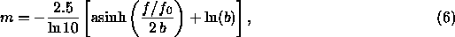

We have discussed how frames detects, deblends, and designates objects. This section and the next discuss the measurements applied to each resulting object. Each of the quantities described here has an associated estimated error measured as well, unless otherwise mentioned. In this subsection, we discuss the various measurements made of the flux in each object. The Asinh Magnitude Scale
We begin by describing the magnitude scale which the SDSS uses. Unless otherwise specified (the most important exceptions being petroMag and modelMag, to get self-consistent colors), the measures discussed here are applied independently in each band pass. Magnitudes within the SDSS are expressed as inverse hyperbolic sine (or ``asinh'') magnitudes, described in detail by Lupton, Gunn, & Szalay (1999). The transformation from linear flux measurements to asinh magnitudes is designed to be virtually identical to the standard astronomical magnitude pogson56 at high signal-to-noise ratio, but to behave reasonably at low signal-to-noise ratio and even at negative values of flux, where the logarithm in the Pogson magnitude fails. This allows us to measure a flux even in the absence of a formal detection; we quote no upper limits in our photometry.
The asinh magnitudes are characterized by a softening parameter b,
the typical  noise of the sky in a PSF aperture in 1'' seeing. The relation
between detected flux f and asinh magnitude m is (see equation (3) of lupton99):
noise of the sky in a PSF aperture in 1'' seeing. The relation
between detected flux f and asinh magnitude m is (see equation (3) of lupton99):

where sets the zeropoint of the magnitude scale (see the
discussion in § 4.5, and especially § 4.5.4).
The quantity b is measured relative to ,
and thus is dimensionless; it is given in Table 21, along with the asinh magnitude associated
with a zero flux object.
The table also
lists the flux corresponding to , above which the asinh
magnitude and the traditional logarithmic magnitude differ by less
than 1% in flux.
For isolated stars, which are well-described by the PSF, the optimal measure of the total flux is determined by fitting a PSF model to the object. In practice, we do this by sinc-shifting the image of a star so that it is exactly centered on a pixel, and then fitting a Gaussian model of the PSF to it. This fit is carried out on the local PSF KL model (§ 4.3) at each position as well; the difference between the two is then a local aperture correction, which gives a corrected PSF magnitude. Finally, we use bright stars to determine a further aperture correction to a radius of 7.4'' as a function of seeing, and apply this to each frame for its seeing. This involved procedure is necessary to take into account the full variation of the PSF (measured in the psp described above) across the field, including the low signal-to-noise ratio wings. Empirically, this reduces the seeing-dependence of the photometry to below 0.02 mag for seeing as poor as 2''. The resulting magnitude is stored in the quantity psfMag. As mentioned above, the flag PSF_FLUX_INTERP warns that the PSF photometry might be suspect. The flag BAD_COUNTS_ERROR warns that because of interpolated pixels, the error may be under-estimated.
The PSF errors include contributions from photon statistics and uncertainties in the PSF model and aperture correction, although they do not include uncertainties in photometric calibration (§ 4.5). Repeat observations show that these errors are probably underestimated by 10-20%.
The flux contained within the aperture of a spectroscopic fiber (3 arcsec in diameter) is calculated in each band and stored in fiberMag. Note that no correction for seeing is applied to this measure of the magnitude. For children of deblended galaxies, some of the pixels within a 1.5 arcsec radius may belong to other children. In this case, the fiber magnitudes can be rather misleading, as they will not reflect the amount of light which the spectrograph will see. For future data releases, we will calculate the true flux within a fiber diameter, including all light from the parent that falls in the aperture centered at the location of the child. We will also correct the detected flux to a fiducial value of the seeing.
For galaxy photometry, measuring flux is more difficult than for stars, because galaxies do not all have the same radial surface brightness profile, and have no sharp edges. In order to avoid biases, we wish to measure a constant fraction of the total light, independent of the position and distance of the object. Please refer to the discussion in strauss01. To satisfy these requirements, the SDSS has adopted a modified form of the petrosian76 system, measuring galaxy fluxes within a circular aperture whose radius is defined by the shape of the azimuthally averaged light profile.
We define the ``Petrosian ratio'' at a radius r from
the center of an object to be the ratio of the local surface
brightness in an annulus at r to the mean surface brightness within
r, as described by blanton01a, yasuda01, strauss01:
where I(r) is the azimuthally averaged surface brightness profile.
The Petrosian radius is defined as the radius at which
equals some specified value , set
to 0.2 in our case. The
Petrosian flux in any band is then defined as the flux within a
certain number (equal to 2.0 in our case) of r Petrosian radii:
In the SDSS five-band photometry, the aperture in all bands is set by
the profile of the galaxy in the r band alone. This procedure ensures
that the color measured by comparing in different bands is
measured through a consistent aperture.
The aperture is large enough to contain nearly all of the flux for typical galaxy profiles, but small enough that the sky noise in is small. Thus, even substantial errors in cause only small errors in the Petrosian flux (typical statistical errors near the spectroscopic flux limit of are ), although these errors are correlated.
The Petrosian radius in each band is the parameter petroRad, and the Petrosian magnitude in each band (calculated, remember, using only petroRad for the r band) is the parameter petroMag.
In practice, there are a number of complications associated with this definition, because noise, substructure, and the finite size of objects can cause objects to have no Petrosian radius, or more than one. Those with more than one are flagged as MANYPETRO; the largest one is used. Those with none have NOPETRO set. Most commonly, these objects are faint ( or so); the Petrosian ratio becomes unmeasurable before dropping to the limiting value of 0.2; these have PETROFAINT set and have their ``Petrosian radii'' set to the default value of the larger of 3 arcsec or the outermost measured point in the radial profile. Finally, a galaxy with a bright stellar nucleus, such as a Seyfert galaxy, can have a Petrosian radius set by the nucleus alone; in this case, the Petrosian flux misses most of the extended light of the object. This happens quite rarely, but one dramatic example in the EDR data is the Seyfert galaxy NGC 7603 = Arp 092, at = 23:18:56.6, = +00:14:38.
How well does the Petrosian magnitude perform as a reliable and complete measure of galaxy flux? Theoretically, the Petrosian magnitudes defined here should recover essentially all of the flux of an exponential galaxy profile and about 80% of the flux for a de Vaucouleurs profile. As shown by blanton01a, this fraction is fairly constant with axis ratio, while as galaxies become smaller (due to worse seeing or greater distance) the fraction of light recovered becomes closer to that fraction measured for a typical PSF, about 95% in the case of the SDSS. This implies that the fraction of flux measured for exponential profiles decreases while the fraction of flux measured for de Vaucouleurs profiles increases as a function of distance. However, for galaxies in the spectroscopic sample (), these effects are small; the Petrosian radius measured by frames is extraordinarily constant in physical size as a function of redshift (strauss01).
Just as the PSF magnitudes are optimal measures of the fluxes of
stars, the
optimal measure of the flux of a galaxy would use a matched galaxy
model. With this in mind, the code fits two models to the
two-dimensional image of each object in each band; a pure
de Vaucouleurs profile,
(truncated beyond to smoothly go to zero at , and
with some softening within ),
and a pure exponential profile,
(truncated beyond to smoothly go to zero at ), each
of arbitrary axis ratio and position angle. Although for large
objects it is possible and even desirable to fit more complicated
models (e.g., bulge plus disk), the computational expense to compute
them is not justified for the majority of the detected
objects . The models are convolved
with a double-Gaussian fit to the PSF, which is provided by psp.
Residuals between the
double-Gaussian and the full KL PSF model are added on for just the
central PSF component of the image.
. The models are convolved
with a double-Gaussian fit to the PSF, which is provided by psp.
Residuals between the
double-Gaussian and the full KL PSF model are added on for just the
central PSF component of the image.
At bright magnitudes (), the model magnitudes are a poor measure of the total flux of the galaxy, due to the fact that the fits are restricted to the central parts of objects strateva01. This issue will be addressed in future data releases.
These fitting procedures yield the quantities: r_deV and
r_exp, the effective radii of the models; ab_deV and
ab_exp, the axis ratio of the best fit models; and phi_deV
and phi_exp, the position angles of the ellipticity (in degrees
East of North). Note that these quantities correctly model the
effects of the PSF. Also recorded are the likelihoods
associated with each model from the  fit, deV_L and
exp_L, and the total magnitudes associated with each fit,
deVMag and expMag. Errors for each of these quantities (which
are based only on photon statistics) are also reported. We apply
aperture corrections to make these model magnitudes equal the PSF
magnitudes in the case of an unresolved object.
fit, deV_L and
exp_L, and the total magnitudes associated with each fit,
deVMag and expMag. Errors for each of these quantities (which
are based only on photon statistics) are also reported. We apply
aperture corrections to make these model magnitudes equal the PSF
magnitudes in the case of an unresolved object.
In order to measure unbiased colors of galaxies, we measure their flux through equivalent apertures in all bands. We choose the model (exponential or de Vaucouleurs) of higher likelihood in the r filter, and apply that model (i.e., allowing only the amplitude to vary) in the other bands after convolving with the appropriate PSF in each band. The resulting magnitudes are termed modelMag. The resulting estimate of galaxy color will be unbiased in the absence of color gradients. Systematic differences from Petrosian colors are in fact often seen due to color gradients, in which case the concept of a global galaxy color is somewhat ambiguous. For faint galaxies, the model colors have appreciably higher signal-to-noise ratio than do the Petrosian colors.
Due to the way in which model fits are carried out, there is some weak discretization of model parameters, especially r_exp and r_deV. Also note that very occasionally, the quoted axis ratios are given negative values. These two problems will be addressed in subsequent data releases.
Reddening corrections in magnitudes at the position of each object, reddening, are computed following schlegel98. These corrections are not applied to the magnitudes in the databases. Conversions from E(B-V) to total extinction , assuming a z=0 elliptical galaxy spectral energy distribution, are tabulated in Table 22.
Which Magnitudes Should One Use?
Faced with this array of different magnitude measurements to choose from, which one is appropriate in which circumstances? We cannot give any guarantees of what is appropriate for the science you want to do, but here we present some examples, where we use the general guideline that one usually wants to maximize some combination of signal-to-noise ratio, fraction of the total flux included, and freedom from systematic variations with observing conditions and distance:
Finally, we note that azimuthally-averaged radial profiles are provided, as described below, and can easily be used to create circular aperture magnitudes of any desired type. For instance, to study a large dynamic range of galaxy fluxes, one could measure alternative Petrosian magnitudes with parameters tuned such that the Petrosian flux includes a small fraction of the total flux, but yields higher signal-to-noise ratio measurements at faint magnitudes.